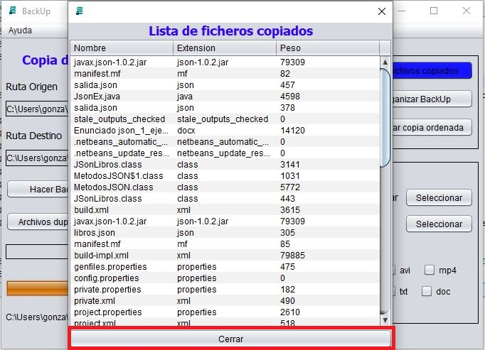
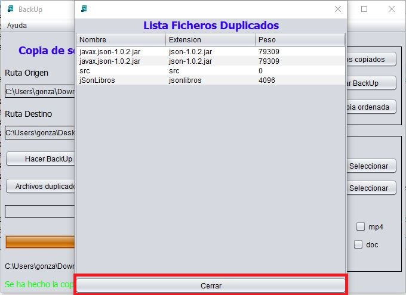

 
Cuando se haga click en alguno de los botones "ver archivo copiados" o "ver archivos duplicados" para que muestre bien los archivos se debe de cerrar la pantalla desde el botón, de lo contrario se mostrarán los archivos repetidos.